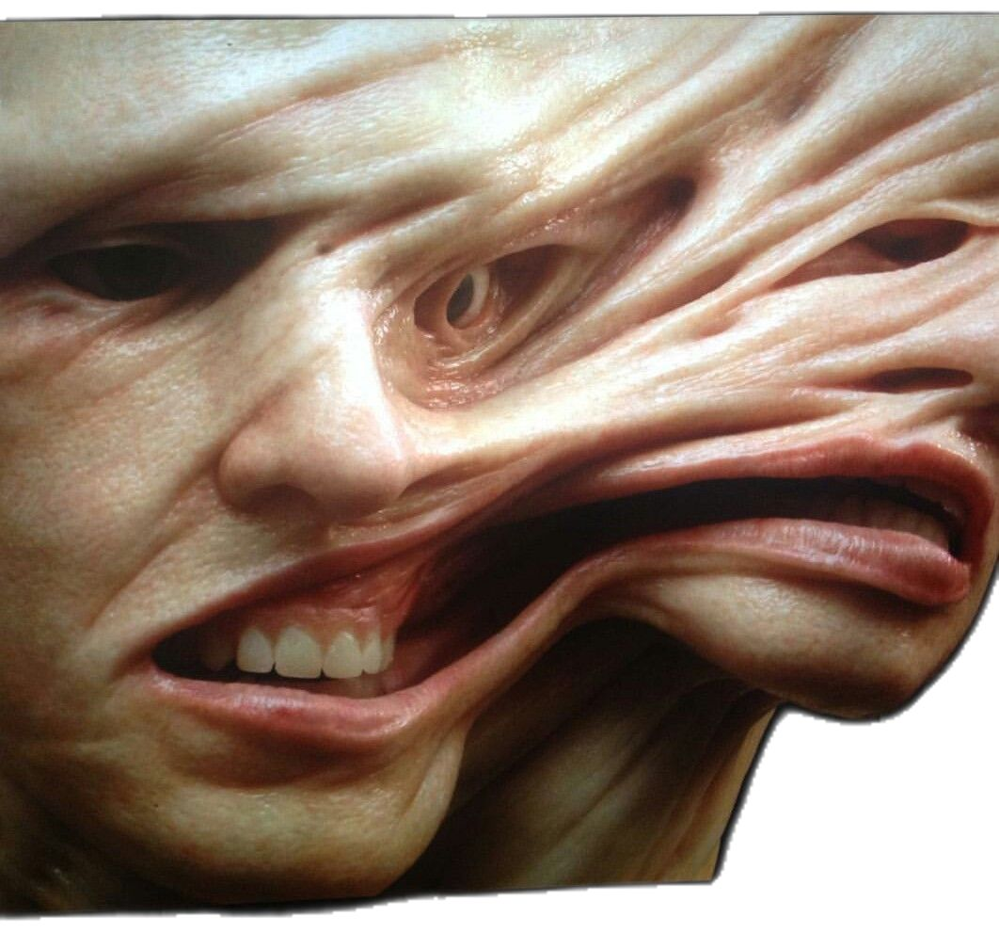
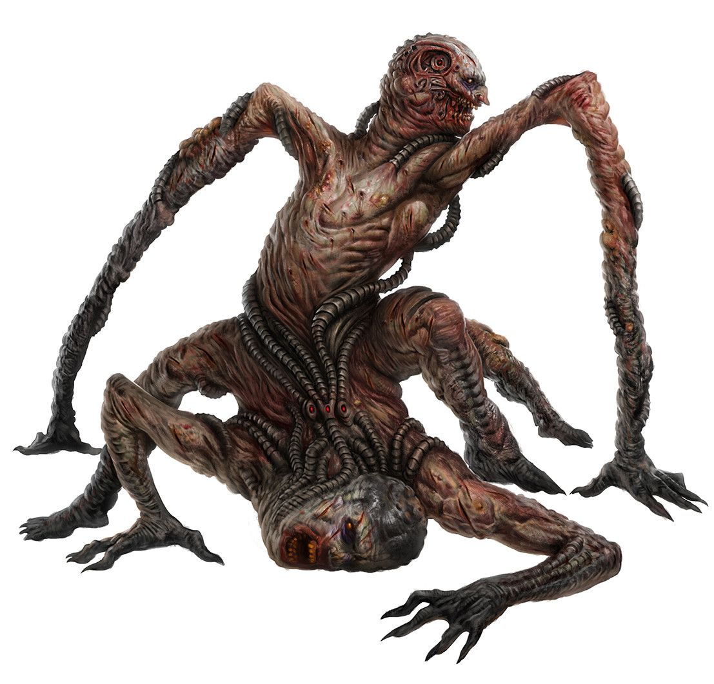
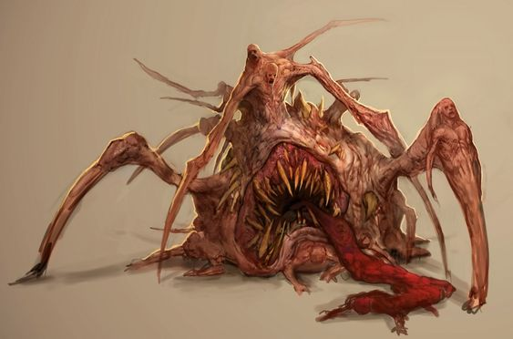
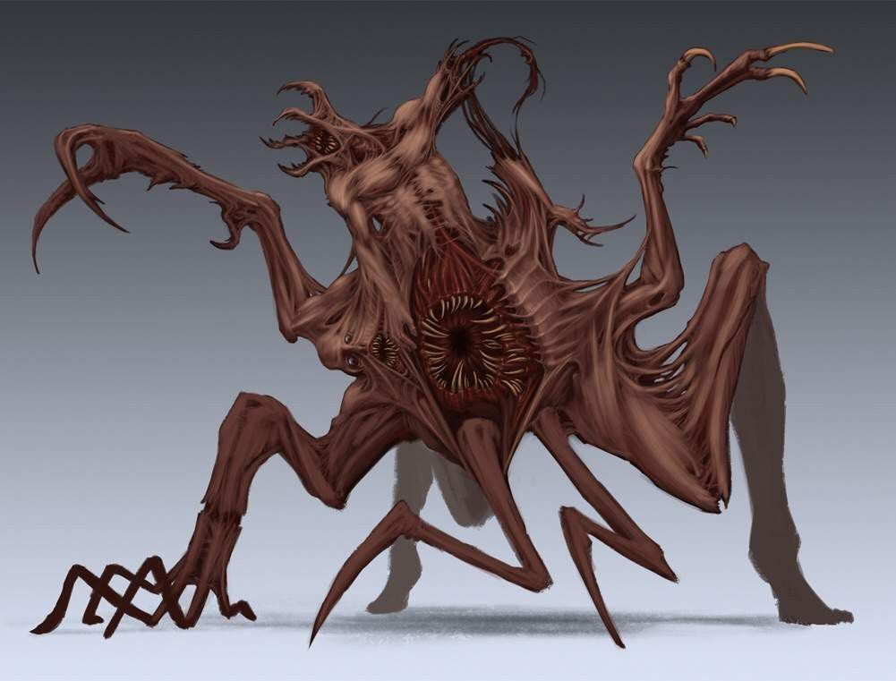
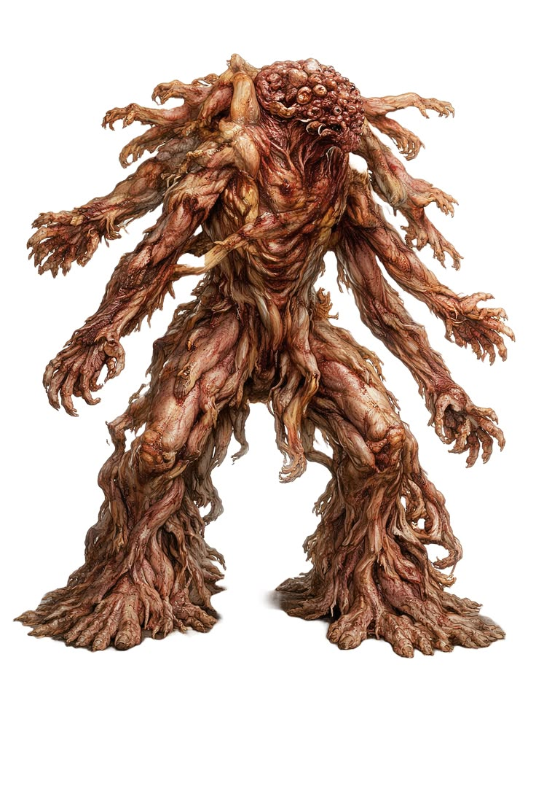
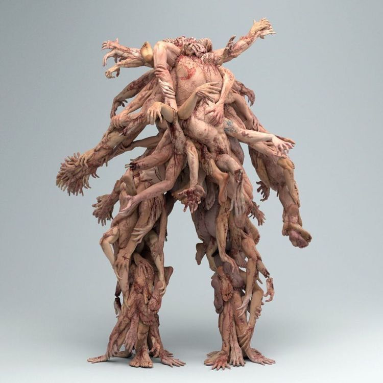
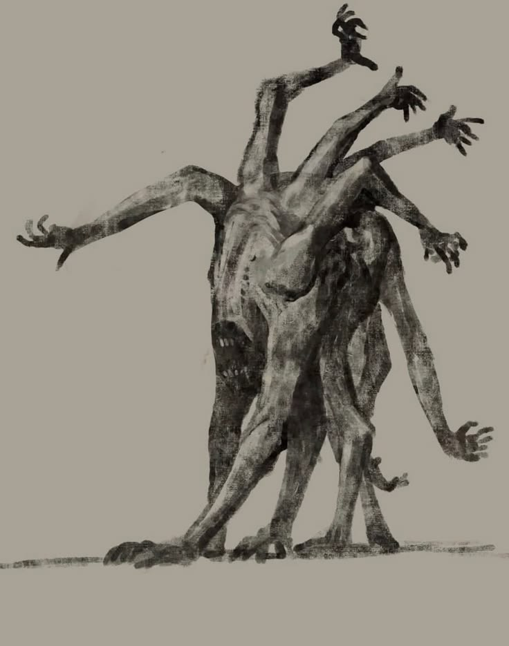

Семь референсов пользователя — основные ориентиры сращения. Биологическая подборка остаётся вспомогательной. Формы переносим на шесть свёрнутых Полипоидов вокруг несущего тела, с мягкими щупальцами и толстыми швами.

U1 · Натяжение общей оболочки
Берём: Ткань натянута мостами между отдельными объёмами; широкие складки задают направление тяги.
Не переносим: Лица, глаза, носы, зубы.

U2 · Несогласованные оси тел
Берём: Сросшиеся части сохраняют собственные направления и разную ориентацию.
Не переносим: Гуманоидный торс, голову, суставчатые опорные ноги и шланги.

U3 · Тяжёлая низкая масса
Берём: Низкий центр тяжести, неровный край и разная длина выступающих частей.
Не переносим: Центральную зубастую пасть, язык и паучьи ноги.

U4 · Тяга в разные стороны
Берём: Перепонки и натянутые тяжи связывают разнонаправленные части; силуэт асимметричен.
Не переносим: Вертикального двуногого монстра, рёбра и зубастые отверстия.

U5 · Узнаваемые тела внутри массы
Берём: Ключевой референс: составляющие тела видны внутри целого; масса удерживает чужие конечности.
Не переносим: Человеческие руки, пальцы, двуногую посадку и кровавую фактуру.

U6 · Взаимное удержание тел
Берём: Ключевой референс: переплетение удерживает отдельные тела в колонии; щупальца Полипа выполняют эту роль.
Не переносим: Человеческую анатомию и вертикальную композицию.

U7 · Асимметричный внешний контур
Берём: Разные направления, интервалы и длины выступов; масса не выглядит регулярной звездой.
Не переносим: Кисти, голову, суставчатые ноги и высокую посадку.